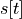
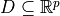
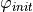
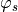
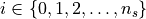

3. Tutorial and Examples¶
TuLiP is developed for synthesis of discrete controllers for hybrid control systems, including supervisory controllers, switching controllers and receding horizon temporal logic planners (not supported in this version).
To design a system, humans start by expressing the intended design in mathematics. This mathematical description is then given to a computer, which computes a controller to be used for creating the physical system.
Whether a controller exists, and whether the computer succeeds in finding a controller, depend on the feasibility of the specification, as well as the computational resources available and the algorithms used.
The main elements that the mathematical specification describes are:
Goal
Physics
Environment
The goal is what we want the system to accomplish. The physics is how the system behaves in the real world, e.g., inertia. The environment is the rest of the world, and what assumptions are made about how it interacts with the system that is being designed.
3.1. Synthesis of Reactive Controllers¶
To illustrate the basic synthesis capabilities of TuLiP, we synthesize a simple discrete state controller for a robotic motion control system.
3.1.1. Problem Formulation¶
We consider a physical system with given dynamics (“plant”) and a controller that we are about to design ourselves. Both discrete-valued and continuous-valued variables may be used to describe the behavior of the system.
The environment can affect this system in two ways:
through discrete-valued variables
through continuous-valued variables, understood as “disturbance” (noise).
In summary, we study problems with the following elements:
discrete-valued plant variables (“discrete state”)
continuous-valued plant variables (“continuous state”)
discrete-valued environment variables
continuous-valued environment variables (disturbance)
specification: formulae, including difference equations.
Here, discrete state refers to variables that take only a finite number of possible values in the system behaviors that interest us, whereas continuous state refers to variables that can take an infinite number of possible values, e.g., the position of the car.
The environment state is related to factors over which the controller has no authority, such as the position of an obstacle, or the outside temperature. At any given time, the controller regulates the system (or controlled) state so as to satisfy the specification, given the current state of plant, environment, and the controller’s “internal” state (memory – think of a microprocessor’s own memory).
We say that a specification is realizable if there exists a controller exists that steers the plant in a way that, for all environment behaviors that we assume are possible to happen, the specification requirements on the plant are satisfied.
We will use the following variables and functions of time to describe the continuous dynamics:
 a variable that represents discrete time
a variable that represents discrete time continuous state,
control input signal,
![d[t]](_images/math/45e4ca9b2f5aded17286ce6ce6898435d9cb2dc5.png) (uncontrolled) disturbance.
(uncontrolled) disturbance.
Suppose the continuous state of the system evolves according to the
following discrete-time linear time-invariant state space model:
for 
(1)¶
where:
- are the continuous states
over which we study the system behavior,
 is the set of admissible control inputs,
is the set of admissible control inputs,-  is the set of exogenous disturbances
that we assume are possible.
We consider the case where the sets are bounded polytopes.
The control design problem is solved in two phases. In the fist phase we abstract continuous-valued variables, replacing them with discrete-valued variables, with suitable constraints on their assumed and required behavior that faithfully represent what is going on at the continuous level.
At the discrete level, a controller is synthesized from a specification expressed in temporal logic. The specification is written in what is known as an assume-guarantee form:
(2)¶
where:
 is an assumption on what initial states are possible
 is an assumption about how the environment behaves,
is an assumption about how the environment behaves, is a requirement on the desired behavior we want, and the physical constraints that have to be satisfied.
These descriptions are not absolute. Some times, there are aspects of a problem that can be modeled in equivalent ways as either assumptions or requirements, using environment or system variables to represent them. This is a choice made during modeling of a problem with mathematics.
As described in the Introduction, our approach to this reactive control system synthesis consists of the following main steps:
Abstract the continuous-valued variables using discrete-valued variables, by generating a partition of the continuous states that preserves the meaning of statements that appear in the specification.
Abstract the possible changes of continuous-valued variables, by discretizing the continuous dynamics, based on solving reachability problems.
Digital design synthesis, by solving games of infinite duration.
These steps are summarized in the following figure:

In particular, realizability of the specification (together with the abstracted continuous dynamics) is decided in the middle of this image, by using reactive synthesis algorithms.
3.1.2. Proposition Preserving Partition of Continuous State Space¶
Given the continuous state space  of the system and the set
of propositions on the continuous state of the system, we
partition into a finite number of cells such that all the
continuous states in each cell satisfy exactly the same set of propositions
in .
of the system and the set
of propositions on the continuous state of the system, we
partition into a finite number of cells such that all the
continuous states in each cell satisfy exactly the same set of propositions
in .
This can be done using the following function call:
- abstract.prop2part(state_space: Polytope, cont_props_dict: dict[Polytope]) PropPreservingPartition[source]
Takes a domain state_space and a list of propositions cont_props, and returns a proposition-preserving partition of the state-space.
3. Relevant¶
PropPreservingPartition, polytope.Polytope
- @param state_space:
problem domain
- @param cont_props_dict:
propositions
- @return:
state-space quotient partition induced by propositions
The above function returns a proposition preserving partition as a PropPreservingPartition object.
- class abstract.PropPreservingPartition(domain: Polytope | Region | None = None, regions: list[Polytope | Region] | None = None, adj: lil_array | None = None, prop_regions: dict[..., Polytope | Region] | None = None, check: bool = True)[source]
Partition class with following fields:
Attributes:
domain: the domain we want to partition
regions: `Region`s of proposition-preserving partition
adj: sparse matrix showing which regions are adjacent. The order of Region`s is the same as in the `list regions.
type: scipy lil sparse
prop_regions: map from atomic proposition symbols to continuous subsets
3. Relevant¶
prop2part
3.1.3. Continuous State Space Discretization¶
Given a proposition preserving partition of the continuous state space and the evolution of the continuous state as in (1), we refine the partition based on the reachability relation between cells and obtain a finite state abstraction of the evolution of the continuous state, represented by a finite transition system.
The abstraction algorithms that are implemented in TuLiP take the:
description of the dynamics as difference equations that are piecewise-affine over a polytopic partition, together with the
proposition-preserving partition of the continuous state space,
and refine them into a (discrete) graph and a new partition of the state space into polytopes. These polytopes can be smaller in size than the polytopes that comprise the proposition-preserving partition.
The nodes of this graph (which is generated from the abstraction algorithm) correspond to the polytopes of this new partition of the state space. The arcs (directed edges) that connect the nodes represent feasible transitions in the continuous state space.
When creating these arcs, the abstraction algorithm ensures that it will be possible to guide the system from the source region (polytope) of the arc, to the destination region of the arc, in the presence of any environment disturbances specified in the difference equations.
Ensuring this property during abstraction is necessary to enable the implementation of the discrete controller, that is synthesized automatically in a later step described below, by continuous feedback controllers.
The next figure shows this abstraction step. We start from the proposition preserving partition on the left, together with the dynamics, and obtain by abstraction the discrete graph and matching partition on the right.

The LtiSysDyn class is used to define continuous dynamics.
- class hybrid.LtiSysDyn(A: ndarray | None = None, B: ndarray | None = None, E: ndarray | None = None, K: ndarray | None = None, Uset: Polytope | None = None, Wset: Polytope | None = None, domain: Polytope | Region | None = None, time_semantics: Literal['discrete', 'sampled'] | None = None, timestep: float | None = None)[source]
Represents discrete-time continuous-state dynamics.
Specifically, dynamics of the form:
` s[t + 1] = A * s[t] + B * u[t] + E * d[t] + K `subject to the constraints:
` u[t] \in Uset d[t] \in Wset s[t] \in domain `where: - u[t] the control input - d[t] the disturbance input - s[t] the system state
Attributes:
A, B, E, K, (matrices)
Uset, Wset, (each a polytope.Polytope)
domain (polytope.Polytope or polytope.Region)
time_semantics: - ‘discrete’: if the system is
originally a discrete-time system, or
‘sampled’: if the system is sampled from a continuous-time system)
timestep: A positive real number containing the timestep (for sampled system)
as defined above.
3. Note¶
For state-dependent bounds on the input,
` [u[t]; s[t]] \in Uset `can be used.
3. Relevant¶
PwaSysDyn, SwitchedSysDyn, polytope.Polytope
Once we have the proposition preserving partition and the continuous dynamics, continuous state space discretization can be done using the following function call:
- abstract.discretize(part: PropPreservingPartition, ssys: LtiSysDyn | PwaSysDyn, N: int = 10, min_cell_volume: float = 0.1, closed_loop: bool = True, conservative: bool = False, max_num_poly: int = 5, use_all_horizon: bool = False, trans_length: int = 1, remove_trans: bool = False, abs_tol: float = 1e-07, plotit: bool = False, save_img: bool = False, cont_props: list[Polytope] | None = None, plot_every: int = 1, simu_type: Literal['bi', 'dual'] = 'bi') AbstractPwa[source]
Refine the partition via bisimulation or dual-simulation.
Refines the partition via either: - bisimulation, or - dual-simulation
algorithms, and establish transitions based on reachability analysis.
3. Reference¶
3. Relevant¶
prop2partition.pwa_partition, prop2partition.part2convex
- @param N:
horizon length
- @param min_cell_volume:
the minimum volume of cells in the resulting partition.
- @param closed_loop:
boolean indicating whether the closed loop algorithm should be used. (default is True)
- @param conservative:
True: force sequence in reachability analysis to stay inside starting cell
False: safety is ensured by keeping the sequence inside a convexified version of the original proposition-preserving cell.
- @param max_num_poly:
maximum number of polytopes in a region to use in reachability analysis.
- @param use_all_horizon:
in closed-loop algorithm: if we should look for reachability also in less than N steps.
- @param trans_length:
the number of polytopes allowed to cross in a transition. A value of 1 checks transitions only between neighbors, a value of 2 checks neighbors of neighbors and so on.
- @param remove_trans:
if True, then remove the found transitions between non-neighbors.
- @param abs_tol:
maximum volume for an “empty” polytope
- @param plotit:
plot partitioning as it evolves
- @param save_img:
save snapshots of partitioning to PDF files, requires plotit=True
- @param cont_props:
continuous propositions to plot
- @param simu_type:
‘bi’ (default): use bisimulation partition
‘dual’: use dual-simulation partition
The option use_all_horizon changes both how reachability is computed
during discretization, and also what assumption is made about when the
discrete-valued environment variables are sampled:
With
use_all_horizon = False, a fixed sampling period is assumed, and reachability problems are solved for a fixed (discrete-time) horizon equal to N steps.With
use_all_horizon = True, reachability considers trajectories that take 1..N steps. As a result, from different states, the same discrete-strategy (see below) transition can take a different number of time steps to be implemented in the continuous state space. This requires the assumption that the system can sample the discrete-valued environment variables at times that continuous transitions complete.
3.1.4. Digital design synthesis¶
The continuous state space discretization generates a finite state
abstraction of the continuous state, represented by a finite transition
system. Each state in this finite transition system corresponds to a cell
in the continuous domain. A transition in this finite
state system indicates that from any continuous state that
belongs to cell , there exists a sequence of control inputs
that takes the system to another
continuous state in cell  . Hence, under the
assumption that the desired behavior is a stutter-invariant property,
we can describe the continuous dynamics by an LTL formula of the form
. Hence, under the
assumption that the desired behavior is a stutter-invariant property,
we can describe the continuous dynamics by an LTL formula of the form
where  is a new discrete variable that describes in which cell
the continuous state is.
is a new discrete variable that describes in which cell
the continuous state is.
Since the partition is proposition preserving, all the continuous states
that belong to the same cell satisfy exactly the same set of propositions on
the continuous state. By the abuse of notation, we write if all the continuous states in cell satisfy proposition
 . Then, we can replace any proposition on the
continuous state variables by the formula .
. Then, we can replace any proposition on the
continuous state variables by the formula .
Putting everything together, we now obtain a specification of the form in
(2) (see also Specifications). We can then use a GR(1) game
solver, as those available in omega
and gr1c
to automatically synthesize a strategy that
ensures the satisfaction of the specification, taking into account all the
possible behaviors of the environment. This is done using the
synth.synthesize function:
- synth.synthesize(specs: GRSpec, env: FiniteTransitionSystem | None = None, sys: FiniteTransitionSystem | None = None, ignore_env_init: bool = False, ignore_sys_init: bool = False, rm_deadends: bool = True, solver: Literal['gr1c', 'gr1py', 'omega', 'slugs'] = 'omega') MealyMachine | None[source]
Call synthesis tool solver on the specification.
There are three attributes of specs that define what kind of controller you are looking for:
moore: What information the controller knows when deciding the next values of controlled variables:
Moore: can read current state, but not next environment variable values, or
Mealy: can read current state and next environment variable values.
- qinit:
Quantification of initial variable values: Whether all states that satisfy a predicate should be winning, or the initial values of some (or all) the variables is subject to the synthesizer’s choice.
- plus_one:
The form of assume-guarantee specification, i.e., how the system guarantees relate to assumptions about the environment.
For more details about these attributes, see GRSpec.
The states of the transition system can be either:
all integers, or
all strings
For more details of how the transition system is represented in logic look at synthesize_many.
3. Beware!¶
This function provides a generic interface to a variety of routines. Being under active development, the types of arguments supported and types of objects returned may change without notice.
- @param env:
A transition system describing the environment:
states controlled by environment
input: sys_actions
output: env_actions
initial states constrain the environment
This constrains the transitions available to the environment, given the outputs from the system.
- @param sys:
A transition system describing the system:
states controlled by the system
input: env_actions
output: sys_actions
initial states constrain the system
- @param ignore_env_init:
Ignore any initial state information contained in env.
- @param ignore_sys_init:
Ignore any initial state information contained in sys.
- @param rm_deadends:
return a strategy that contains no terminal states.
- @param solver:
Magic string that declares what tool to invoke, what method to use, etc. Currently recognized forms:
For GR(1) synthesis:
“gr1c”: use gr1c via interfaces.gr1c. written in C using CUDD, symbolic
“gr1py”: use gr1py via interfaces.gr1py. Python, enumerative
“omega”: use omega via interfaces.omega. Python using dd or Cython using CUDD, symbolic
“slugs”: use slugs via interfaces.slugs. C++ using CUDD, symbolic
- @return:
If spec is realizable, then return a Mealy machine implementing the strategy. Otherwise return None.
This synthesis step is conceptually depicted in the next figure, where the synthesis algorithms are used to decide whether a strategy exists that guarantees the specification requirements, under the specification assumptions. If such a strategy exists, then it is constructed.
More details about how Moore/Mealy capability,
the assume-guarantee form of specification, and
quantification of initial variable values are selected is described
in the class spec.GRSpec:
- spec.GRSpec(env_vars: dict[str, ...] | ~collections.abc.Iterable[str] | None = None, sys_vars: dict[str, ...] | ~collections.abc.Iterable[str] | None = None, env_init: str | ~collections.abc.Iterable[str] = '', sys_init: str | ~collections.abc.Iterable[str] = '', env_safety: str | ~collections.abc.Iterable[str] = '', sys_safety: str | ~collections.abc.Iterable[str] = '', env_prog: str | ~collections.abc.Iterable[str] = '', sys_prog: str | ~collections.abc.Iterable[str] = '', moore: bool = True, plus_one: bool = True, qinit: ~typing.Literal['\\A \\A', '\\A \\E', '\\E \\A', '\\E \\E'] = '\\A \\A', parser=<module 'tulip.spec.parser' from '/opt/hostedtoolcache/Python/3.10.14/x64/lib/python3.10/site-packages/tulip/spec/parser.py'>)[source]¶
GR(1) specification.
The basic form is:
` (env_init & []env_safety & []<>env_prog_1 & []<>env_prog_2 & ...) -> (sys_init & []sys_safety & []<>sys_prog_1 & []<>sys_prog_2 & ...) `Attributes:
moore: select whether a strategy can see primed environment variables.
plus_one: select causal implication between assumptions and guarantees.
qinit: select quantification of initial values for variables:
win below describes the set of winning states. internal_init is the initial condition for the internal strategy variables. Op == expr means operator Op is defined as the expression expr.
r’A A’: forall env_vars: forall sys_vars: env_init -> win. sys_init must be empty or contain true. The strategy enumeration iterates through all assignments that satisfy env_init & internal_init.
r’A E’: forall env_vars: exist sys_vars: form, where: - form == sys_init & (env_init -> win)
(plus_one is True)
form == env_init -> (sys_init & win) (plus_one is False)
The strategy enumeration iterates through all assignments that satisfy E sys_vars: env_init, and picks assignments that satisfy form & internal_init.
r’E A’:
` exist sys_vars: forall env_vars: form `where: - form == sys_init & (env_init -> win)
(plus_one is True)
form == env_init -> (sys_init & win) (plus_one is False)
The strategy enumeration picks an assignment that satisfies:
` internal_init & \A env_vars: form `and iterates through all assignments that satisfy env_init.
r’E E’:
` exist env_vars: exist sys_vars: sys_init & win `env_init must be empty or contain true. The strategy enumeration picks an assignment that satisfies:
` sys_init & win & internal_init `env_vars: alias for input_variables of LTL, concerning variables that are determined by the environment.
env_init: list of str that specifies the assumption about the initial state of the environment.
env_safety: list of str that specifies the assumption about the evolution of the environment state.
env_prog: list of str that specifies the justice assumption on the environment.
sys_vars: alias for output_variables of LTL, concerning variables that are controlled by the system.
sys_init: list of str that specifies the requirement on the initial state of the system.
sys_safety: list of str that specifies the safety requirement.
sys_prog: list of str that specifies the progress requirement.
An empty list for any formula (e.g., if env_init = list()) is marked as True in the specification.
This corresponds to the constant Boolean function, which usually means that subformula has no effect (is non-restrictive) on the spec.
Consult GRSpec.__init__ concerning arguments at the time of instantiation.
The resulting output is a controller function that decides what values the controlled (discrete-valued) variables should take next.
A Moore controller function cannot read the next values of (discrete-valued) environment variables before taking this decision, whereas a Mealy controller function can. Moore controllers are more realistic, and less prone to modeling errors, thus recommended.
- transys.machines.Transducer()[source]
Sequential Transducer, i.e., a letter-to-letter function.
3. Inputs¶
P = {p1, p2,…} is the set of input ports. An input port p takes values in a set Vp. The set Vp is called the “type” of input port p. A “valuation” is an assignment of values to the input ports in P.
We call “inputs” the set of pairs:
` {(p_i, Vp_i), ...} `of input ports p_i and their corresponding types Vp_i.
A guard is a predicate (bool-valued) used as sub-label for a transition. A guard is defined by a set and evaluated using set membership. So given an input port value p=x, then if:
` x \in guard_set `then the guard is True, otherwise it is False.
The “inputs” are defined by an OrderedDict:
`python {'p1': explicit, 'p2': check, 'p3': None, ...} `where: - explicit:
is an iterable representation of Vp, possible only for discrete Vp. If ‘p1’ is explicitly typed, then guards are evaluated directly:
` input_port_value == guard_value ? `
check: is a class with methods:
__contains__(x): check if guard value given to input port ‘p1’ is in the set of possible values Vp.
__call__(guard_set, input_port_value): check if input_port_value in guard_set This allows symbolic type definitions.
For example, input_port_value might be assigned int values, but the guard_set be defined by a symbolic expression as the string: ‘x<=5’.
Then the user is responsible for providing the appropriate method to the Mealy Machine, using the custom check class described here.
Note that we could provide a rudimentary library for the basic types of checks, e.g., for the above simple symbolic case, where using function eval() is sufficient.
None: signifies that no type is currently defined for this input port, so input type checking and guard evaluation are disabled.
This can be used to skip type definitions when they are not needed by the user.
However, since Machines are in general the output of synthesis, it follows that they are constructed by code, so the benefits of typedefs will be considerable compared to the required coding effort.
Guards annotate transitions:
Guards: States x States —> Input_Predicates
3. Outputs¶
Similarly defined to inputs, but:
for Mealy Machines they annotate transitions
for Moore Machines they annotate states
3. State Variables¶
Similarly defined to inputs, they annotate states, for both Mealy and Moore machines:
States —> State_Variables
3. Update Function¶
The transition relation:
for Mealy Machines:
` States x Input_Valuations ---> Output_Valuations x States `Note that in the range Output_Valuations are ordered before States to emphasize that an output_valuation is produced during the transition, NOT at the next state.
The data structure representation of the update function is by storage of the Guards function and definition of Guard evaluation for each input port via the OrderedDict discussed above.
for Moore Machines:
` States x Input_Valuations ---> States States ---> Output_valuations `3. Note¶
A transducer may operate on either finite or infinite words, i.e., it is not equipped with interpretation semantics on the words, so it does not “care” about word length. It continues as long as its input is fed with letters.
For Machines, each state label consists of (possibly multiple) sublabels, each of which is either a variable, or, only for Moore machines, may be an output.
3. See Also¶
FSM, MealyMachine, MooreMachine
It should be noted that a temporal logic formula / property should be notionally distinguished from a synthesis problem:
You may write a formula to describe how a variable can change over time. You may write even an assume-guarantee formula to describe an open-system specification (i.e., how a system should behave in a certain environment).
A synthesis problem includes a definition of what the controller can do, and whether the synthesizer should satisfy all initial conditions we wrote, or is allowed to pick some initial conditions (thus synthesize the initial conditions too).
You may encounter this distinction if you give to synthesize both
a transition system and temporal logic formulae.
You may choose to define strategy capabilities (Moore/Mealy) as
attributes to both, but these choices will have to agree,
because one controller will be synthesized, not two.
3.1.5. Example 1: Discrete State Robot Motion Planning¶
This example is provided in examples/discrete.py.
It illustrates the use of the omega module in synthesizing a planner
for a robot that only needs to make discrete decision.
We consider the robot moving around the regions as shown in the above figure while receiving externally triggered park signal. The specification of the robot is
We cannot, however, deal with this specification directly since it is not in the form of GR(1). An equivalent GR(1) specification of the above specification can be obtained by introducing an auxiliary discrete system variable initialized to True. The transition relation of is given by
To automatically synthesize a planner for this robot, we first import the necessary modules:
# Import the packages that we need
import logging
from tulip import transys, spec, synth
We next define the dynamics of the system, modeled as a discrete transition system in which the robot can be located anyplace no a 2x3 grid of cells. Transitions between adjacent cells are allowed, which we model as a transition system in this example (it would also be possible to do this via a formula):
# Create a finite transition system
sys = transys.FTS()
# Define the states of the system
sys.states.add_from(['X0', 'X1', 'X2', 'X3', 'X4', 'X5'])
sys.states.initial.add('X0') # start in state X0
# Define the allowable transitions
#! TODO (IF): can arguments be a singleton instead of a list?
#! TODO (IF): can we use lists instead of sets?
#! * use optional flag to allow list as label
sys.transitions.add_comb({'X0'}, {'X1', 'X3'})
sys.transitions.add_comb({'X1'}, {'X0', 'X4', 'X2'})
sys.transitions.add_comb({'X2'}, {'X1', 'X5'})
sys.transitions.add_comb({'X3'}, {'X0', 'X4'})
sys.transitions.add_comb({'X4'}, {'X3', 'X1', 'X5'})
sys.transitions.add_comb({'X5'}, {'X4', 'X2'})
To create the specification, we label some of the states with names:
# Add atomic propositions to the states
sys.atomic_propositions.add_from({'home', 'lot'})
sys.states.add('X0', ap={'home'})
sys.states.add('X5', ap={'lot'})
These names serve as atomic propositions that are true when the system is in the indicated states.
The environment can issue a park signal that requires the robot to respond by moving to the lower left corner of the grid. We assume that the park signal is turned off infinitely often. We describe this using the following code:
env_vars = {'park'}
env_init = set() # empty set
env_prog = '!park'
env_safe = set() # empty set
Here the specification is broken up into four pieces: a description of the
discrete environment variables (env_vars), a specification for
the initial condition for the environment (env_init), a progress
formula (env_prog) that must be satisfied infinitely often, and
a safety formula (env_safe) that must hold at all times during
the execution. The set() command is used to initialize one or
more of these variables to the empty set.
The system specification is that the robot should repeatedly revisit the upper right corner of the grid while at the same time responding to the park signal by visiting the lower left corner. The LTL specification is given by
Since this specification is not in GR(1) form, we introduce the variable X0reach that is initialized to True and the specification becomes
The python code to implement this logic is given by:
# Augment the system description to make it GR(1)
#! TODO: create a function to convert this type of spec automatically
sys_vars = {'X0reach'} # infer the rest from TS
sys_init = {'X0reach'}
sys_prog = {'home'} # []<>home
sys_safe = {'(X (X0reach) <-> lot) || (X0reach && !park)'}
sys_prog |= {'X0reach'}
Note the use of <-> for equivalence (equality). As in the case
of the environmental specification, the system specification consists of
four parts that provide additional discrete system variables
(sys_vars), initial conditions (sys_init), progress
conditions (sys_prog) and safety conditions
(sys_safe).
Finally, we construct the full specification for the system and environment by creating a GR(1) specification consisting of the various pieces we have constructed:
# Create the specification
specs = spec.GRSpec(env_vars, sys_vars, env_init, sys_init,
env_safe, sys_safe, env_prog, sys_prog)
To synthesize the controller, we call the synth.synthesize()
function.
# Moore machines
# controller reads `env_vars, sys_vars`, but not next `env_vars` values
specs.moore = True
# synthesizer should find initial system values that satisfy
# `env_init /\ sys_init` and work, for every environment variable
# initial values that satisfy `env_init`.
specs.qinit = r'\E \A'
ctrl = synth.synthesize(specs, sys=sys)
assert ctrl is not None, 'unrealizable'
The controller can now be saved in graphical form, or printed if the dependencies for DOT layout are not available:
if not ctrl.save('discrete.png'):
print(ctrl)
3.1.6. Example 2: Continuous State Robot Motion Planning¶
This example is provided in examples/continuous.py. It is an extension of the previous example by including continuous dynamics.
First, we import the necessary modules, specify the smv file, spc file and aut file, and specify the environment and the discrete system variables as in the previous example.
import logging
import numpy as np
from tulip import spec, synth, hybrid
from polytope import box2poly
from tulip.abstract import prop2part, discretize
from tulip.abstract.plot import plot_partition
Next, we specify the continuous dynamics. This includes specifying the continuous state space, propositions on continuous variables, and the dynamics. The robot dynamics in this case is discretized with a sampling time of 0.2.
# Problem parameters
input_bound = 1.0
uncertainty = 0.01
# Continuous state space
cont_state_space = box2poly([[0., 3.], [0., 2.]])
# Continuous dynamics
# (continuous-state, discrete-time)
A = np.array([[1.0, 0.], [ 0., 1.0]])
B = np.array([[0.1, 0.], [ 0., 0.1]])
E = np.array([[1,0], [0,1]])
# Available control, possible disturbances
U = input_bound *np.array([[-1., 1.], [-1., 1.]])
W = uncertainty *np.array([[-1., 1.], [-1., 1.]])
# Convert to polyhedral representation
U = box2poly(U)
W = box2poly(W)
# Construct the LTI system describing the dynamics
sys_dyn = hybrid.LtiSysDyn(A, B, E, None, U, W, cont_state_space)
Now, we can construct the proposition preserving partition of the continuous state space and discretize the continuous state space based on the dynamics.
# Define atomic propositions for relevant regions of state space
cont_props = dict()
cont_props['home'] = box2poly([[0., 1.], [0., 1.]])
cont_props['lot'] = box2poly([[2., 3.], [1., 2.]])
# Compute the proposition preserving partition of the continuous state space
cont_partition = prop2part(cont_state_space, cont_props)
plot_partition(cont_partition) if show else None
# Given dynamics & proposition-preserving partition, find feasible transitions
disc_dynamics = discretize(
cont_partition, sys_dyn, closed_loop=True,
N=8, min_cell_volume=0.1, plotit=show
)
The rest is the same as in the previous example. We specify the environment, create a GR(1) system specification, and synthesize a controller.
# Synthesize
ctrl = synth.synthesize(specs,
sys=disc_dynamics.ts, ignore_sys_init=True)
assert ctrl is not None, 'unrealizable'
# Generate a graphical representation of the controller for viewing
if not ctrl.save('continuous.png'):
print(ctrl)
3.2. Working with Systems with Piecewise Affine Dynamics¶
TuLiP can also handle piecewise affine dynamics of the form:
for
(3)¶![s[t+1] &= A_is[t] + B_iu[t] + E_id[t] + K_i\\
u[t] &\in U_i\\
d[t] &\in D_i\\
s[t] &\in S_i](_images/math/0906f52865e5cac42f03e8ca0a32e43bc270072f.png)
where for  form a polytopic partition of the state space , in
(1), is the set of admissible
control inputs, is the set of exogenous
disturbances within  , and are the
continuous state, the control signal and the exogenous disturbance,
respectively, at time .
, and are the
continuous state, the control signal and the exogenous disturbance,
respectively, at time .
LtiSysDyn class is used to represent subsystems of the form (3).
- class hybrid.LtiSysDyn(A: ndarray | None = None, B: ndarray | None = None, E: ndarray | None = None, K: ndarray | None = None, Uset: Polytope | None = None, Wset: Polytope | None = None, domain: Polytope | Region | None = None, time_semantics: Literal['discrete', 'sampled'] | None = None, timestep: float | None = None)[source]
Represents discrete-time continuous-state dynamics.
Specifically, dynamics of the form:
` s[t + 1] = A * s[t] + B * u[t] + E * d[t] + K `subject to the constraints:
` u[t] \in Uset d[t] \in Wset s[t] \in domain `where: - u[t] the control input - d[t] the disturbance input - s[t] the system state
Attributes:
A, B, E, K, (matrices)
Uset, Wset, (each a polytope.Polytope)
domain (polytope.Polytope or polytope.Region)
time_semantics: - ‘discrete’: if the system is
originally a discrete-time system, or
‘sampled’: if the system is sampled from a continuous-time system)
timestep: A positive real number containing the timestep (for sampled system)
as defined above.
3. Note¶
For state-dependent bounds on the input,
` [u[t]; s[t]] \in Uset `can be used.
3. Relevant¶
PwaSysDyn, SwitchedSysDyn, polytope.Polytope
The subsystems can be put together to define a piecewise affine system which is represented by PwaSysDyn class.
- class hybrid.PwaSysDyn(list_subsys: list[LtiSysDyn] | None = None, domain: Polytope | Region | None = None, time_semantics: Literal['discrete', 'sampled'] | None = None, timestep: float | None = None, overwrite_time: bool = True)[source]
Specifies a polytopic piecewise-affine system.
Attributes:
list_subsys: list of LtiSysDyn
domain: domain over which piecewise-affine system is defined.
time_semantics: either - ‘discrete’ (if system is originally
a discrete-time system) or
‘sampled’ (if system is sampled from a continuous-time system)
timestep: A positive real number that contains the timestep (for sampled systems)
For the system to be well-defined the domains of its subsystems should be mutually exclusive (modulo intersections with empty interior) and cover the domain.
3. Relevant¶
LtiSysDyn, SwitchedSysDyn, polytope.Polytope
3.2.1. Example 3: Robot Motion Planning with Piecewise Affine Dynamics¶
This example is provided in examples/pwa.py. It is an extension of the previous examples including a robot model with piecewise affine dynamics.
Assume our robot is traveling on a nonhomogenous surface (x-y plane), resulting in different dynamics at different parts of the plane. Since the continuous state space in this example is just x-y position, different dynamics in different parts of the surface can be modeled as a piecewise affine system. When , the following dynamics are active:
def subsys0():
A = np.array([[1.105_2, 0.], [ 0., 1.105_2]])
B = np.array([[1.105_2, 0.], [ 0., 1.105_2]])
E = np.array([[1,0], [0,1]])
U = box2poly([[-1., 1.], [-1., 1.]])
U.scale(input_bound)
W = box2poly([[-1., 1.], [-1., 1.]])
W.scale(uncertainty)
dom = box2poly([[0., 3.], [0.5, 2.]])
sys_dyn = LtiSysDyn(A, B, E, None, U, W, dom)
#sys_dyn.plot()
return sys_dyn
When , the following dynamics are active:
def subsys1():
A = np.array([[0.994_8, 0.], [0., 1.105_2]])
B = np.array([[-1.105_2, 0.], [0., 1.105_2]])
E = np.array([[1, 0], [0, 1]])
U = box2poly([[-1., 1.], [-1., 1.]])
U.scale(input_bound)
W = box2poly([[-1., 1.], [-1., 1.]])
W.scale(uncertainty)
dom = box2poly([[0., 3.], [0., 0.5]])
sys_dyn = LtiSysDyn(A, B, E, None, U, W, dom)
#sys_dyn.plot()
return sys_dyn
Piecewise affine system can be formed from the dynamics of its subsystems.
subsystems = [subsys0(), subsys1()]
# Build piecewise affine system from its subsystems
sys_dyn = PwaSysDyn(subsystems, cont_state_space)
if plotting:
ax = sys_dyn.plot()
ax.figure.savefig('pwa_sys_dyn.pdf')
Discretization and synthesis follow exactly as before.